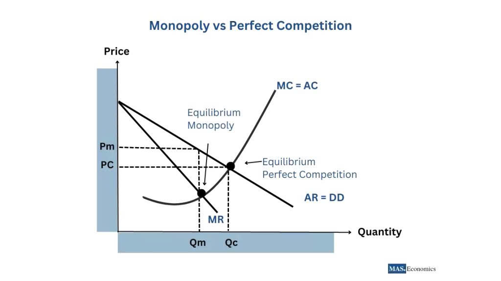

Monopoly vs. Perfect Competition: Where Should Your Business Strategically Position Itself? A Deep Dive into Market Structures
For strategic leaders, understanding the structure of the market they compete in is paramount to setting pricing, production, and long-term investment strategies. At opposite ends of the economic spectrum lie two foundational models: Perfect Competition and Monopoly. While few real-world markets perfectly align with either model, these frameworks provide the necessary tools to assess an industry's profitability potential and to determine the optimal strategic positioning for any firm. The fundamental goal of corporate strategy is often to escape the harsh realities of competition and acquire a degree of market power.
The Fundamental Difference: The Nature of the Demand Curve
The core distinction between the two models lies in the firm's perception of the market demand curve, which directly determines its pricing power:
- Perfect Competition: The firm is a price taker. Because its output is negligible compared to the total market, the firm faces a perfectly elastic (horizontal) demand curve at the market price (P). If the firm raises its price even slightly, its sales drop to zero.
- Monopoly: The single firm is a price setter. It faces the entire market's downward-sloping demand curve. This allows the monopolist to choose a specific quantity and let the market determine the corresponding maximum price, or vice-versa, to maximize profits.
1. Perfect Competition: The Zenith of Economic Efficiency
A perfectly competitive market is characterized by four key assumptions: numerous small firms (none can influence the market), homogeneous (identical) products (no branding or differentiation), perfect information for all participants (buyers know all prices), and free entry and exit (no cost or legal barriers).
Economic Outcomes and Strategic Reality:
In this idealized structure, competition forces efficiency to its peak. The long-run equilibrium is achieved when price (P) equals Marginal Cost (MC) and Minimum Average Total Cost (min ATC). Because P=min ATC, firms cannot earn economic profit in the long run. Any short-run profit attracts new competitors, increasing supply, and inevitably pushing prices down until they cover only the opportunity cost of resources.
- Social Welfare: Perfect competition is often cited as the benchmark for maximum social welfare, as the equilibrium point maximizes the combined consumer surplus and producer surplus.
- For the Strategic Manager: Positioning within a market that approximates perfect competition (like global commodity markets or simple manufacturing) requires a relentless, almost brutal focus on cost leadership and operational excellence. The strategic path to survival involves achieving process innovation to lower the cost curve (ATC) below industry rivals. Differentiation efforts, such as minor branding or advertising, are generally wasteful because buyers are only motivated by the lowest available price.
2. Pure Monopoly: The Cost of Market Power
A Pure Monopoly exists when a single firm is the sole producer of a product with no close substitutes, protected by significant barriers to entry. These barriers are the lifeline of monopoly power.
Barriers to Entry and Monopoly Power:
The sustainability of a monopoly relies entirely on the impermeability of its barriers, which can be categorized as:
- Legal Barriers: Patents, copyrights, and exclusive licenses granted by the government (e.g., utility companies).
- Resource Control: Exclusive ownership of a vital input (e.g., a diamond mining company owning nearly all the world's supply of a certain gem).
- Natural Monopoly: A situation where one firm can supply the entire market at a lower average cost than two or more firms combined, typically due to extreme Economies of Scale (e.g., large-scale infrastructure like railways or water lines).
Economic Outcomes and Strategic Reality:
The monopolist maximizes profit by producing a quantity where Marginal Revenue equals Marginal Cost (MR = MC) and then charging the highest price consumers are willing to pay for that quantity. Critically, this price (P) is significantly higher than marginal cost (MC), leading to sustained economic profits for the firm but resulting in deadweight loss—the loss of potential welfare to society because the firm restricts output below the socially optimal level.
- For the Strategic Manager: The primary goal is to establish and vigorously defend barriers to entry. Strategies focus on continuous innovation to secure new patents, strategic acquisition of complementary assets to block rivals, or lobbying for favorable regulatory policies. Pricing strategy revolves around identifying the elasticity of market demand to set the optimal price and potentially engaging in price discrimination (charging different prices to different customer groups) to capture even more consumer surplus.
3. Strategic Positioning: Seeking Market Imperfection
The vast majority of businesses operate in market structures falling between these two extremes: Monopolistic Competition (many small firms, differentiated products, easy entry) or Oligopoly (a few large firms, high barriers). The optimal strategic goal for virtually every firm is to move its market position away from the price-taking environment of perfect competition and toward the profit-maximizing structure of a monopoly.
The Path to Competitive Advantage:
- Differentiation: For firms operating near the competitive end, the immediate strategic focus must be Product Differentiation. This involves investing heavily in branding, perceived quality, unique features, or superior user experience. This differentiation transforms the product from a homogeneous commodity into a unique offering, granting the firm a downward-sloping demand curve and allowing it limited pricing power (moving the firm toward Monopolistic Competition).
- Creating Barriers: For firms in an Oligopoly, the strategy is about Sustaining Market Power and engaging in sophisticated Game Theory. Firms must anticipate the actions of their few large rivals before making output or pricing decisions. Strategic moves often involve large-scale capital expenditures (like R&D or factory capacity) to credibly signal commitment and deter potential new entrants or aggressive pricing by existing rivals.
In conclusion, while operating in a perfectly competitive environment demands relentless focus on cost, the path to superior long-term profitability lies in strategically investing in and defending the barriers—be they legal, technological, or brand-based—that allow the business to act as a price maker. The successful enterprise analyzes the structural constraints of its industry and deliberately crafts a strategy that maximizes the firm’s distance from the low-profit, high-efficiency outcomes of perfect competition.
Resource: Hai Dang - Bachelor in Vin University